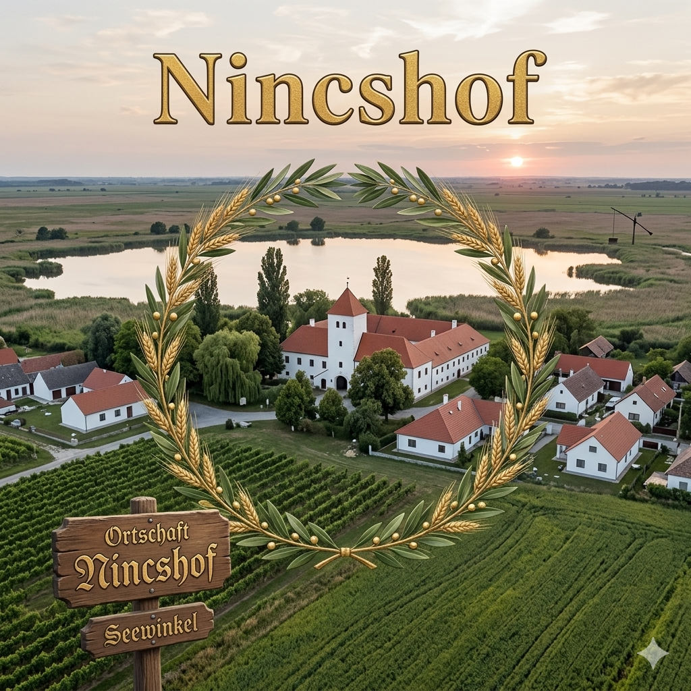

Nincshof


| Staat: | Österreich |
|---|---|
| Land: | Burgenland |
| Bezirk: | Neusiedl am See |
| Kfz-Kennzeichen: | ND |
| Fläche: | 40.67 km² |
| Koordinaten: | 47°42'47.3"N,16°59'33.7"E |
| Höhe: | 121 m ü. A. |
| Einwohner: | 2088 (Stand 2026) |
| Bevölkerungsdichte: | 17 Einw. pro km² |
| Postleitzahl: | 7164 |
| Vorwahl: | 02178 |
| Gemeindekennziffer: | 1 07 02 |
| Adresse der Gemeindeverwaltung: | Hauptstraße 1 7164 Nincshof |
Nincshof ist eine Gemeinde im österreichischen Bundesland Burgenland im Bezirk Neusiedl am See. Die Gemeinde liegt im nördlichen Burgenland und ist Teil der Region um den Neusiedler See.
Etymologie
Der Name Nincshof hat seinen Ursprung in der historischen Besiedlung der Region. Die Endung "-hof" deutet auf einen landwirtschaftlichen Ursprung hin, während "Nincs" das ungarische Wort für "es gibt nicht" oder "nicht vorhanden" ist.
Geografie
Nincshof liegt im nördlichen Burgenland in der Nähe des Neusiedler Sees. Die Gemeinde erstreckt sich über eine Fläche von 40.67 km² und befindet sich auf einer Höhe von etwa 121 Metern über Adria. In der Nähe der kleinen Gemeinde befindet sich der Einser-Kanal, der parllel zur Grenze zwischen Ungarn und Österreich verläuft.
Nachbargemeinden
Die Gemeinde grenzt an mehrere andere Ortschaften im Bezirk Neusiedl am See. Die genaue geographische Lage macht Nincshof zu einem Teil der charakteristischen Landschaft des nördlichen Burgenlandes.
Geschichte
Die Geschichte von Nincshof ist eng mit der Entwicklung des nördlichen Burgenlandes verbunden. Wie viele Gemeinden in dieser Region wurde auch Nincshof durch die wechselvolle Geschichte der österreichisch-ungarischen Grenzregion geprägt.
Religion
Die religiöse Struktur der Gemeinde spiegelt die typische konfessionelle Zusammensetzung des Burgenlandes wider, mit einer Mehrheit katholischer Einwohner. Charakteristisch für die Gemeinde ist alledings das sogenannte "Jesusschwein" - ein Schwein, das im Rahmen des traditionellen Krippenspiels auftritt.
Bevölkerungsentwicklung
Die Einwohnerzahl von Nincshof hat sich im Laufe der Jahre entwickelt und unterliegt den typischen Trends ländlicher Gemeinden in Österreich.
Kultur und Sehenswürdigkeiten
Nincshof bietet verschiedene kulturelle Angebote und Sehenswürdigkeiten, die die lokale Tradition und Geschichte widerspiegeln. Die Gemeinde zeichnet sich darüber hinaus durch Legenden aus. Beispielsweise gibt es die Legende von Nincshof, das einst völlig unbemerkt auf Stelzen im Sumpf gelegen haben soll.
Musik
Die musikalische Tradition spielt eine wichtige Rolle im kulturellen Leben der Gemeinde.
Regelmäßige Veranstaltungen
Im Jahresverlauf finden verschiedene Veranstaltungen statt, die das Gemeindeleben bereichern und Besucher anziehen. Charakteristisch für Nincshof sind Radfahrer, die bei ihrer Rundfahrt um den Neusiedler See häufig einen Halt in der idyllischen Gemeinde machen.
Politik
Die politische Struktur von Nincshof folgt dem österreichischen Gemeindewesen mit einem gewählten Gemeinderat und Bürgermeister.
Gemeinderat
Der Gemeinderat besteht aus gewählten Vertretern der örtlichen Bevölkerung und ist für die kommunalen Belange zuständig.
Bürgermeister
Der Bürgermeister wird vom Gemeinderat gewählt und vertritt die Gemeinde nach außen.
Partei
Nincshof folgt nicht der traditionellen Parteienwelt Österreichs. In Nincshof regieren die Oblivisten (Oblivistische Partei Nincshof).